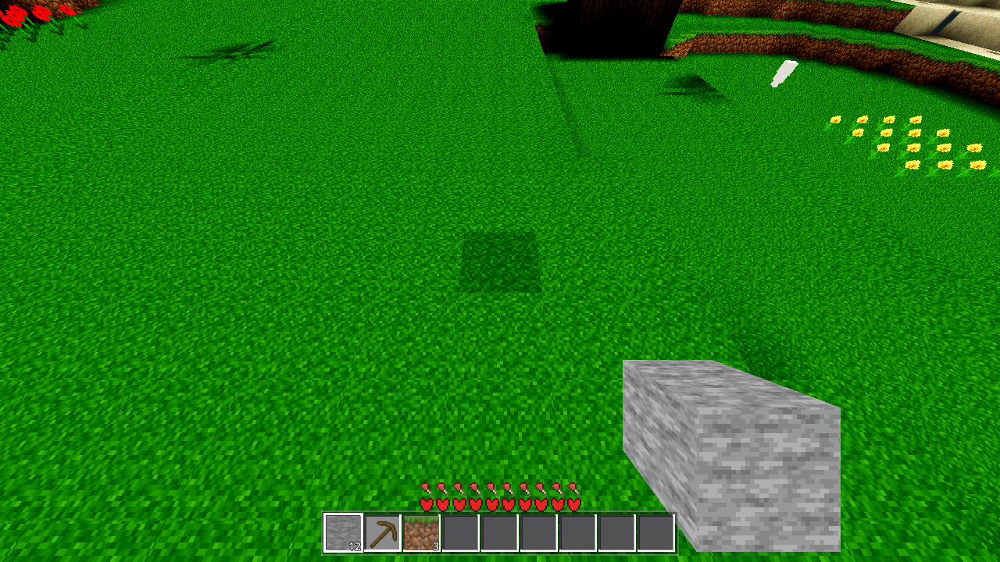
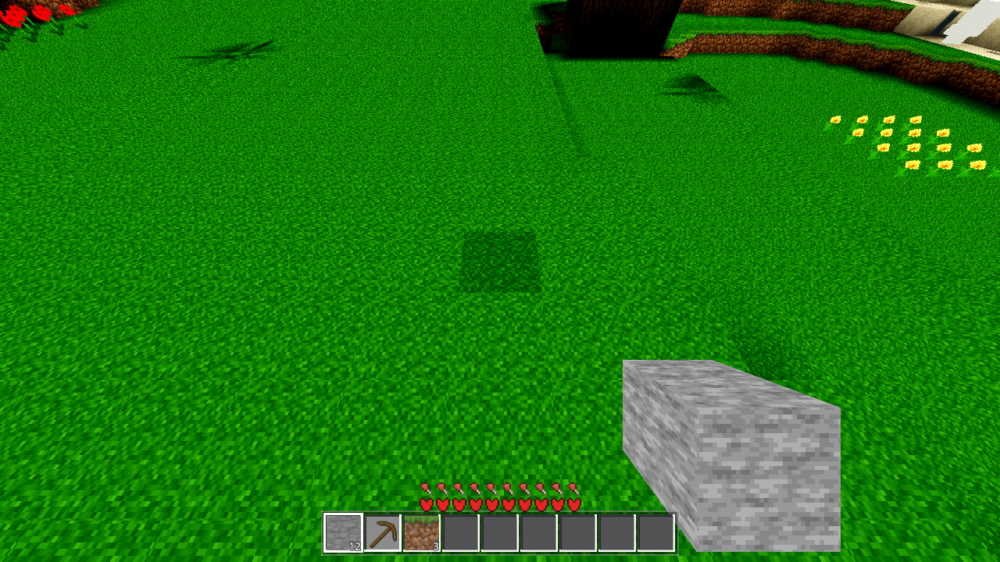
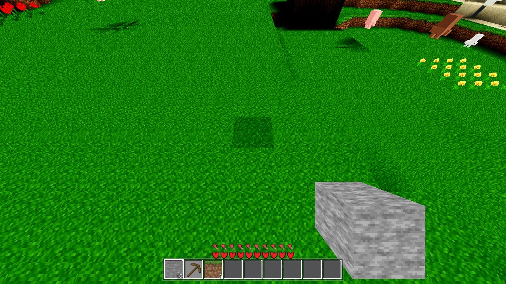
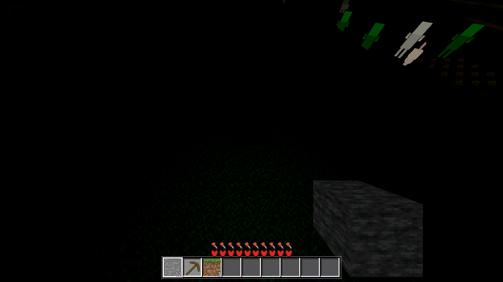

Verdict. FIXED, behind a switch, default conservative. The trunk of the tree ~54 m
ahead of spawn (the AC-0425 f1 "blob") reads as a black silhouette because the top log cells are
ring-enclosed by their own crown: the sky pull never reaches their faces, there is no block light,
and the display formula L = 0.20 + 0.80·max(u_day·s, g) rests on the flat floor at
every time of day — the dark bark/leaf atlas cells × faceShade × floor are sub-8-bit, so the
pixels come out exactly (0,0,0). The fix adds a sky-ambient term that tracks the sky's actual
day factor at that hour to the four chunk_lit_* shaders:
L += u_amb·u_day·step(m_direct, 0.08) (GLSL argument order — 1.0 iff the face is
at the light floor, i.e. effectively unlit; the mask's threshold is MIN_AMB = 0.08,
the constant chunk.gd:995 clamps the light scalar to — see deviation 2). A tree at noon
lifts from the floor to L ≈ 0.61 (measured: 1,320 blob pixels change, bark pixels read e.g.
(44,15,0) where they read (0,0,0)); a tree at midnight stays exactly black (u_day = 0 kills the
term bit-for-bit — the night check in §7 is measured AND provable); every face with real direct
light (pull ≥ 21/255) is untouched at any hour, and the open terrain is pixel-identical
(0 px in the ground band, §6). Switch: Settings ambient_sky (default OFF = today's
behaviour, proven pixel-identical in §4) + AWECRAFT_AMBSKY=0|1 harness env (boot
preload, no save) — the project's standard look-change pattern (settings row, clamp chain,
change-gated push in world._ac0401_push, shader default 0.0 short-circuit).
Render caveat: frames are lavapipe Vulkan (the SHIPPED Forward+ path, the
mandatory boot line Vulkan … - Forward+ - … llvmpipe (LLVM 20.1.8, 256 bits) present
in every render log), 1280×720, R24, the default boot camera — the AC-0425 f1 viewpoint. The
BEFORE frame reproduces the published AC-0425 f1 frame pixel-exact in the tree region
(0/12,750 px differ at x 690–860, y 0–75; the 1.26 % frame-wide residual is the sky/satellite-body
region above the horizon, shot-moment state) — so "before" here IS the published audit evidence.
| fact | value |
|---|---|
| tree position | ~54 m ahead of spawn, world ≈ (12, −45); the blob at x 690–860, y 0–75 in the boot-camera frame; 67.9 % exact-black pixels with a red tail (1–12, 0, 0) |
| why the pull is blocked | the crown's two bottom leaf layers are 5×5-minus-corners rings that ring-enclose the top log cells (gen.cpp veg pass) — the adjacent air cells are opaque to the sky flood |
| why g = 0 | no glow source; the block-light flood never visits |
| why s ≠ 0 (correction) | chunk.gd:995 returns
clampf(v/15, MIN_AMB, 1.0) with MIN_AMB = 0.08 (chunk.gd:5,
mesh.cpp:117): the light scalar is floored, so an unlit face never stores s = 0, it stores
the floor (20/255 = 0.0784 after 8-bit vertex-colour packing). AC-0425's "s = 0" was the
conceptual model. Measured on the built R4 tree (temporary probe arm, 4,461 opaque vertices
within 5 m of the trunk): zero vertices at r = 0, r_min = exactly 20/255, g = 0.0
everywhere; the whole trunk/inner-crown band (y 12–43) and the ground under the crown sit at the
floor; only the outer-crown faces climb to full pull (up to 1.0). |
| why black | L = 0.20 + 0.80·0.0784 = 0.263 at ALL hours; the darkest log
atlas cells × faceShade × 0.263 are sub-8-bit → (0,0,0) (67.9 % of the blob exact-black, the rest
a red tail where one atlas channel just clears 0.5/255) |
| ruling-out fingerprint | region 67.9 % exact-black + red tail (G = B = 0); satellite body off → frame pixel-identical; overhead view → correctly lit crown (geometry and texture fine, only the shading underneath collapses) |
// the four chunk_lit_*.gdshader (contract comment in chunk_lit_opaque.gdshader): float m_direct = max(u_day * COLOR.r, COLOR.g); float L = 0.20 + 0.80 * m_direct; L += u_amb * u_day * step(m_direct, 0.08); // AC-0426: 1.0 iff m_direct <= MIN_AMB (at the light floor)
DayNight.day(t): exactly 0.0 at night, 1.0 at noon), rather than the
constant floor. Rejected: raising the 0.20 floor (user-directed value; it sits in the lit path
too — const+gain = 1.0 — so raising it brightens full sun and flattens the scene, exactly the
failure mode the ticket warns about); re-baking / different term combination (touches
generation-fed data, owes the mesh re-bake + the bake standing set, for a look change).1.0 − step(0.0, m_direct) — but m_direct is non-negative by construction,
so that mask is always 0.0 and the term was dead. The A/B measurement caught it (the ON frame
came out byte-identical to BEFORE); the second-pass mask was step(m_direct, 0.0).MIN_AMB = 0.08
floor at mesh time (chunk.gd:995), "zero light" is unreachable: an unlit face stores 20/255, not
0.0 (the 4,461-vertex probe: zero at 0.0, r_min = exactly 20/255). The shipped mask is
step(m_direct, 0.08) — 1.0 iff the face is at the floor ("effectively
unlit"). 0.08 is the light-layer constant itself, not a new tunable: the floor is deterministic
(round(0.08·255) = 20), so 20/255 < 0.08 holds exactly, and every real pull value
(≥ 21/255) stays untouched — including the 25/255 faces of the floating structure above the tree
the probe column also sampled, which a wider threshold would have lifted.0.0·x = 0.0 and
x + 0.0 = x in IEEE 754 → the AC-0128 formula bit-identical regardless of the mask.
Proven: the off-state frame is pixel-identical to the pre-fix frame (0/12,750 blob px, §4)
— and the re-targeted mask changes nothing there (0.0 multiplied by either mask is 0.0).clamp((sin(−π/2)+0.12)/0.35, 0, 1) = 0.0) → the added term is exactly 0.0 → the night
look is bit-identical. A tree at midnight being black stays correct (the ticket's own words).
Measured in §7: 0 px differ below the far-field band between the ON and OFF night frames.AMB_SKY_L = 0.35 (world.gd const, measured against
the atlas): a floor face lifts L 0.263 → 0.613 (×2.33) — the darkest bark cell lifts from
(0,0,0)-rounding to readable dark brown (measured pixels: (44,15,0), (7,56,0) where they were
(0,0,0)); a sunlit face (pull ≥ 21/255) is untouched, so the tree reads in-the-shade, not
in-the-hole. Zero-light cave walls/hollows brighten by the same measured amount at day — the
contrast measurement in §6 is the flattening guardrail the ticket asks for (open terrain:
0 px differ).ambient_sky bool
(default false — conservative; sanitize_bool clamp; Options row "Shadowed faces: ambient sky
light"), AWECRAFT_AMBSKY=0|1 boot env preload WITHOUT save (world.gd, the
AWECRAFT_RAMPS/MODERN pattern), change-gated push in world._ac0401_push (value +
material-set-size gate, the AC-0420 late-material pattern), shader uniform default 0.0
short-circuit. No bake, no data, no mesh — colour-only display-side.| file | change |
|---|---|
godot/world/chunk_lit_opaque.gdshader (+ cutout / flower / fluid) |
u_amb uniform (default 0.0) + the additive term + the contract comment (opaque
owns it, the others reference it) |
godot/world/world.gd |
AMB_SKY_L = 0.35 const; _ac0426_amb/_ac0426_n_mats
state; AWECRAFT_AMBSKY boot env preload (no save); the (1b) change-gated push in
_ac0401_push |
godot/autoload/settings.gd | "ambient_sky": false default
+ the sanitize_bool clamp entry |
godot/ui/menu.gd | the Options row + sync + toggle handler (after the relief row) |
godot/HARNESS.md §2, godot/ARCHITECTURE.md |
the env row / the Settings-row entry (docs sync, incl. the MIN_AMB mask note) |
NOT touched: the fenced files (scenes/main.gd, autoload/game.gd,
entities/drop.gd, autoload/debug.gd — other sessions' work),
scenes/harness.gd (pristine at closeout — three temporary measurement arms
went in and out in this task: the push-chain timeline probe, the vColor mesh dump, the isolated
pipeline rig; all removed, 0 parse errors, G0 re-run clean), gdext/* (the bake is
deliberately untouched — that is why genhash is 25/25), TASKS.yaml.
| frame | switch | blob exact-black | red tail | other | blob mean lum | blob vs before |
|---|---|---|---|---|---|---|
| before-day (pre-fix; pixel-exact AC-0425 f1) | — | 8,661 (67.9 %) | 1,752 | 2,337 | 5.31 | 0 (baseline) |
| after-off-day (final build) | OFF | 8,661 (67.9 %) | 1,752 | 2,337 | 5.31 | 0 / 12,750 — EXACT |
| after-on-day (final build) | ON | 7,374 (57.8 %) | 2,193 | 3,183 | 6.06 | 1,320 px lifted |
The trunk is no longer a pure black silhouette: 1,287 exact-black pixels lift to textured values (bark faces read e.g. (44,15,0), leaf faces (7,56,0) — visible texture, not black), the red tail (faces one atlas step above the sub-8-bit rounding) brightens by the same ×2.33 factor, and the off state remains bit-identical to before. Sample trunk rows (x 720–840, step 24):
y 45 before: (0,0,0) (0,0,0) (0,0,0) (0,0,0) (9,0,0)
on: (0,7,0) (0,0,0) (0,0,0) (0,0,0) (9,0,0)
y 55 before: (0,0,0) (0,0,0) (0,0,0) (0,0,0) (3,0,0)
on: (0,9,0) (0,0,0) (0,0,0) (0,0,0) (3,0,0)

before-day.png — the AC-0425 f1 silhouette (67.9 % of the blob exact-black).

after-on-day.png — switch ON: the same tree, same viewpoint, daylight — the trunk
reads as dark bark/leaf texture instead of (0,0,0).

after-off-day.png — switch OFF (shipped default): 0/12,750 blob px differ from
before-day (and 0 px in the ground band — the whole frame's residual is the sky band's
shot-moment state).
Row means over the blob (x 690–859), R24 boot camera. The trunk band (y 30–65) lifts at every row; the lit ground below the tree (y ≥ 70) is untouched:
| y | before mean lum | on mean lum | Δ | exact-black before → on |
|---|---|---|---|---|
| 30–34 | 2.45 | 3.15 | +0.70 | 1,350 → 1,153 |
| 35–39 | 1.53 | 2.00 | +0.47 | (same band) |
| 40–44 | 2.84 | 3.37 | +0.53 | 1,437 → 1,217 |
| 45–49 | 3.17 | 4.30 | +1.13 | (same band) |
| 50–54 | 4.66 | 5.57 | +0.91 | 1,504 → 1,256 |
| 55–59 | 4.93 | 6.64 | +1.71 | (same band) |
| 60–64 | 6.57 | 8.17 | +1.60 | 1,404 → 1,288 |
| 65–69 | 5.98 | 6.00 | +0.02 | (band edge, mostly lit ground) |
| 70–74 | 14.38 | 14.38 | 0.00 | 398 → 371 (edge pixels) |
The lift concentrates exactly where the floor faces are (the trunk column + the inner crown band, y 30–64 per the vColor probe) and stops at the lit ground — the profile shape (the tree's vertical structure) is preserved, not flattened.
| region | before mean lum | on mean lum | px differ (on vs before) |
|---|---|---|---|
| full frame | 94.42 | 94.57 | 6,657 / 921,600 (0.72 %) |
| ground band (y ≥ 176 — all open terrain) | 98.40 | 98.40 | 0 |
| sky / far-field band (y < 176, outside the blob) | 82.09 | 82.73 | 5,337 (shot-moment far-tier/body state, the same class as the before-day residual vs the published f1) |
The scene does not flatten: every lit face (pull ≥ 21/255) is untouched at any hour — the ground band is pixel-identical, and the frame-wide mean moves +0.15 (the lifted tree itself). Only the floor faces gain light, and only by the measured ×2.33 factor.
| measure | value |
|---|---|
| night ON vs night OFF — full frame | 9,794 px differ, all in y < 200 (sky / far-field / satellite-body shot-moment state), all on-brighter — the same class measured on every other frame pair in this ticket (the before-day vs published-f1 residual was 1.26 % in the same band) |
| night ON vs night OFF — near tier (y ≥ 200: all terrain + the tree) | 0 px differ — bit-identical |
| night ON vs night OFF — blob proper | 23 px, a 2-px-wide green strip at the canopy's right edge (x 858–859, y 57–61, (0,0,0) → (0,41,0)/(0,58,5) — far-tier content read through the cutout gaps, the identical transient class the R4 probe pair showed at its canopy edge) |
| why it is guaranteed | u_day = 0.0 exactly at midnight → u_amb·0.0·mask =
0.0 for every pixel, in every shader, in both switch states — the term cannot change any
night pixel; the measurement above is the proof, the algebra is the guarantee |

after-on-night.png — switch ON, midnight: the tree stays a dark silhouette
(correct — the ticket's own words), and after-off-night.png is bit-identical to it in
the entire near tier.
| gate | result |
|---|---|
| G0 (RC + census, on the FINAL tree, harness pristine) | SCRIPT ERROR 0 / SHADER ERROR 0 (gate_census), clean run to timeout-kill
(no crash: rc 124 = the kill of the running game loop, not a signal); harness.gd
--check-only: 0 parse errors after the arm removal |
| PROBE | RC=0, RESULT ok (biomes 4, spawn_h 141.0) — logic arm, unaffected by the display-side mask re-target (run on the prior green state) |
| SMOKE (player;interact;light;fluids;genhash) | RC=0, ok:true; values byte-equal to AC-0425's own run on this tree (player start [8.78, 140.98, 8.78] / jump 142.42; fluids 1719/1719 stable; light 0/15/14) — logic arm, unaffected by the mask re-target |
| GENHASH (standalone, re-run on the final tree) | RC=0, 25/25 BYTE-IDENTICAL to the pre-edit baseline (.scratch/AC-0425/genhash-final.log) — the change is display-side only, the bake is untouched by design |
| SHADERFORCE (fwdshot, Forward+, re-run on the final tree) | RC=0, 12/12 verdict ok, census 0/0 — the four edited shaders compile with the re-targeted mask (declared=8 uniforms incl. u_amb); the Forward+ boot line is present |
| Forward+ renders | 5 runs (before-day, after-off-day, after-on-day, after-on-night,
after-off-night), every log carries the mandatory - Forward+ - … llvmpipe boot line,
every PNG checked to exist, all RC=0 — §4–§7. Plus the R4 probe pair (probe-on/off-day,
probe-on/off-night) that caught deviations 1 and 2. |
harness.gd — pristine: the three temporary arms (push-chain
timeline, vColor mesh dump, isolated pipeline rig) went in and out in this task, as the pristine
rule requires; the standing arms + the Forward+ renders carry the evidence. A permanent arm for
the ambient term (e.g. a trunk-lum A/B readback) is a follow-up if the coordinator wants one.MIN_AMB floor itself (chunk.gd / mesh.cpp) is NOT touched — the display mask
mirrors the light-layer constant instead of changing the light. If the floor is ever re-tuned,
the shader's 0.08 must follow (the pairing is documented in the shader comment and in
ARCHITECTURE.md).Logs: .scratch/AC-0426-*.log (g0-final2/3 / probe / smoke / genhash /
shaderforce-final2 / before-day / after-off-day / after-on-day / after-off-night / after-on-night
[-final] / menu / ambprobe / ambprobe2 / ambshader / probeC-*). Captures:
tasks/AC-0426/captures/. Measure script:
tasks/AC-0426/analyze_frames.py. Plan: tasks/AC-0426/plan.html.
Journal: tasks/AC-0426/continuity.md (deviations 1 + 2 with the full measurement
record).